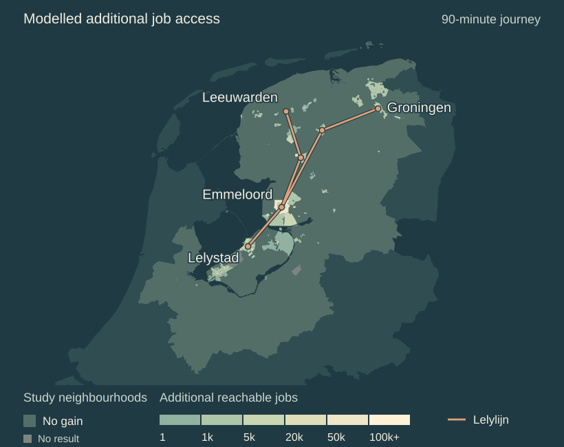

Transport & accessibility
Job access and
the Lelylijn
I modelled how the proposed Lelylijn could change access to existing jobs.
The answer changes with the journey time allowed, the population considered and the way fairness is measured.
Explore the Lelylijn study